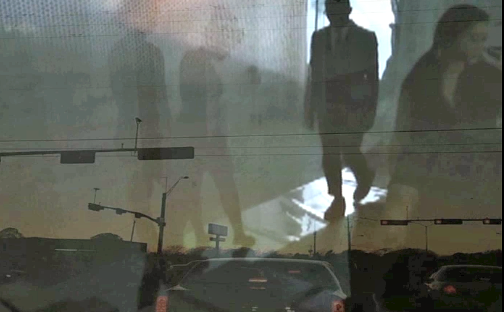
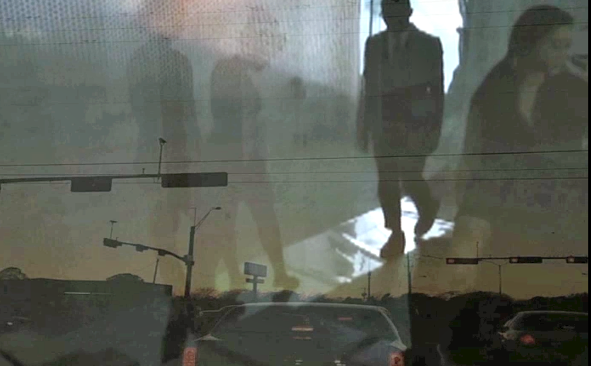

Inner City, Studio Installation
499 Studios, NYC, 2014
x by Jo Wood Brown, x by Miriam Parker

InnerCity studio is a multi-media installation is based on New York City and the movement of people in transition. Viewers move through a labyrinth of a deconstructed city.
It explores experience in-between destinations and how we are always elsewhere... InnerCity employs devises that combine visual, choreographic, filmic and sonic elements that overlap poetically and metaphorically creating a world between dream and reality.


 
